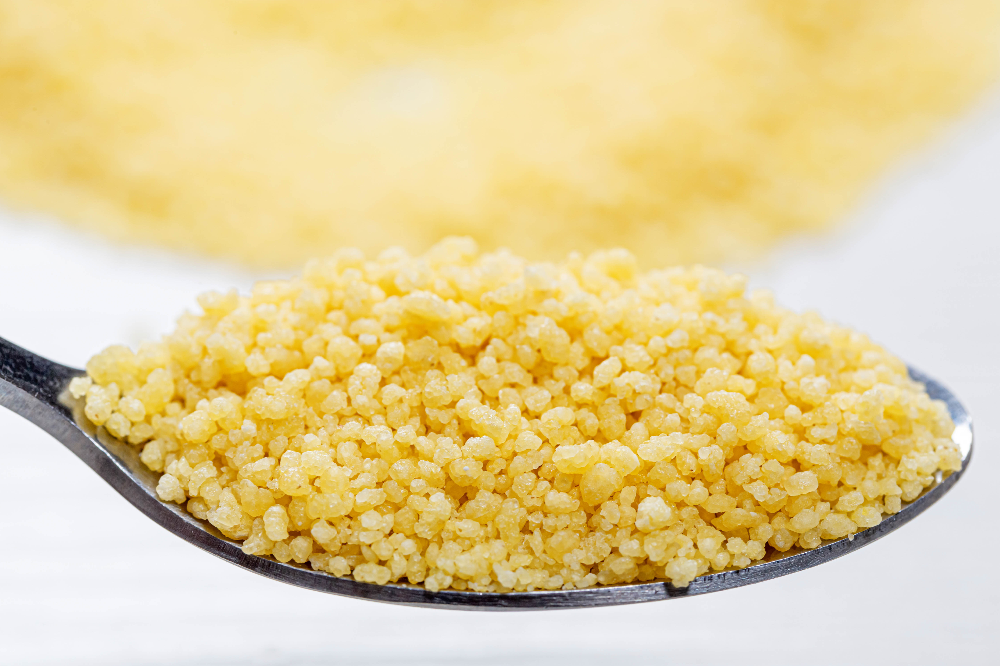

Temps de préparations: 1h 25 min
Historique
Le couscous est l’un des plats emblématiques de la cuisine maghrébine, apprécié non seulement au Maroc, mais également en Algérie, en Tunisie et même au-delà des frontières africaines. Ce plat ancestral remonte à plusieurs siècles et trouve ses origines dans les cultures berbères. La semoule, ingrédient de base du couscous, est obtenue en roulant de la farine de blé dur avec de l’eau, une méthode qui a été transmise de génération en génération. Le couscous symbolise la générosité et le partage. Il est souvent préparé pour les grandes occasions, les mariages, les fêtes religieuses, ou simplement pour rassembler la famille autour d’une table conviviale. Au fil du temps, chaque région a développé sa propre version du couscous, utilisant des viandes, légumes, épices et condiments différents. Par exemple, le couscous marocain est souvent enrichi de légumes variés et parfumé avec des épices douces, tandis que le couscous algérien peut inclure des pois chiches et de la viande séchée. En Tunisie, il est souvent plus épicé. Aujourd’hui, le couscous continue de séduire le monde entier grâce à sa richesse gustative et sa capacité à réunir les gens.
Ingrédients pour deux (02) personnes
 |
 |
| Semoule | Huile d'olive |
 |
|
| Eau | Sel fin |
 |
 |
| Viande | carotte |
Préparations
- Faites revenir la viande et les épices
Commencez par chauffer un filet d’huile d’olive dans une grande marmite ou un couscoussier. Faites revenir les oignons finement hachés jusqu’à ce qu’ils soient translucides. Ajoutez ensuite la viande de votre choix (agneau, poulet ou bœuf) et faites-la dorer sur toutes ses faces. Saupoudrez avec les épices : gingembre, curcuma, une pincée de cannelle, sel et poivre. Mélangez bien pour enrober la viande et les oignons de ces arômes. - Préparez le bouillon aromatique
Ajoutez les tomates coupées en dés ainsi que les pois chiches (si secs, pensez à les tremper au préalable). Déposez un bouquet de coriandre ficelé pour parfumer. Versez de l’eau ou du bouillon jusqu’à ce que la viande soit bien immergée. Portez le tout à ébullition, puis réduisez le feu et laissez mijoter à couvert pendant environ 30 minutes. - Incorporez les légumes plus fermes
Pelez et coupez les carottes et les navets en morceaux. Ajoutez-les dans la marmite une fois que la viande a commencé à s’attendrir. Ces légumes nécessitent un peu plus de temps pour cuire, donc laissez mijoter encore 20 minutes, afin qu’ils commencent à se ramollir tout en absorbant les saveurs du bouillon. - Ajoutez les légumes tendres
Lorsque les carottes et les navets sont presque cuits, ajoutez les légumes plus délicats comme les courgettes et le potiron. Ces derniers cuisent plus rapidement, en environ 15 à 20 minutes. Veillez à surveiller leur texture pour qu’ils restent fondants, sans se défaire. - Préparez la semoule
Pendant que la viande et les légumes cuisent, versez la semoule dans un grand plat. Ajoutez une pincée de sel et un filet d’huile d’olive, puis mélangez avec vos mains pour enrober les grains. Humidifiez légèrement la semoule avec un peu d’eau froide et laissez-la reposer quelques minutes pour qu’elle absorbe l’humidité. - Cuisez la semoule à la vapeur
Placez la semoule dans la partie supérieure du couscoussier, au-dessus du bouillon. Laissez cuire à la vapeur pendant 15 à 20 minutes. Ensuite, retirez-la, égrenez-la délicatement avec une fourchette ou vos mains, humidifiez légèrement si nécessaire, puis répétez l’opération une seconde fois pour obtenir une semoule légère et aérée. - Assemblez et servez
Disposez la semoule chaude en dôme sur un grand plat de service. Creusez un léger puits au centre pour y déposer la viande et les légumes. Arrosez généreusement la semoule avec une louche de bouillon pour la parfumer. Servez le reste du bouillon à part, accompagné de raisins secs réhydratés et d’un peu de harissa pour ceux qui aiment une touche sucrée ou épicée.
Bon appétit !
Le couscous se déguste chaud, idéalement accompagné de raisins secs ou d’une touche de harissa pour les amateurs de saveurs épicées. Il peut être adapté selon les préférences: ajoutez des légumes de saison, variez les épices ou remplacez la viande par du poisson pour une version plus légère.
Retrouver ici d'autres recettes de Couscous.| Notez cette recette et laissez un commentaire pour nous faire part de vos avis! |